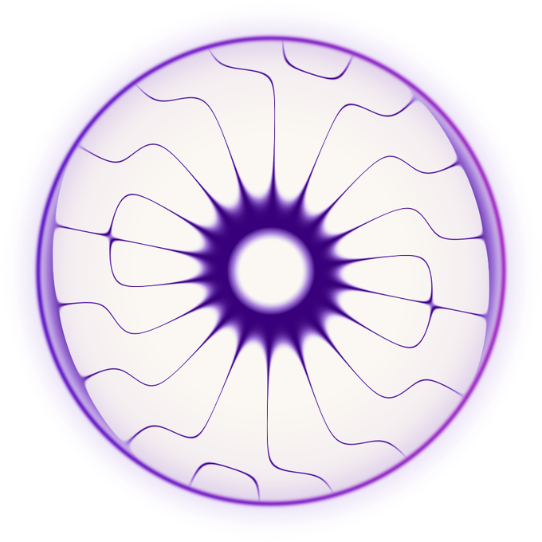

What good looks like
The APPROVED work, side by side. Before calling any design done, put it next to these and ask: same family, same restraint, same warmth? If it would look loud, cheap, or generic here, it fails. (Approved = Michael said yes. The funnel explorations are options, not members of this wall yet.)

The app: Immersions
The anchor. Cream canvas, white cards, the cymatic tile art, one accent doing structure. Why it's right: the art is ownable, everything else stays quiet.
live
Stats v15
Data with no alarm colors: white ground, purple structure, neutral bars, serif verdict. Why it's right: hierarchy carries it, not color.
live
First-run onboarding
One idea per screen, serif headers, the frequency dots as the only color. Why it's right: it teaches without homework energy.
live
The cymatic disc
The most ownable visual we have: music-derived, per song, per frequency. Use the real art from inapp/app-assets-ring/; never a generic substitute.
assetsKit files: zodiac.css (components; hexes restate tokens.json only) · page-template.html (marketing skeleton) · references: creatives/design-references-library (Endel, Co-Star, Aesop, Maude, Oura). Gates: colors diff vs tokens.json (code/check_app_against_tokens.py for app HTML) · UI verified on a real 390px render · copy via copy-grader. Kit status: v0 PROPOSED 2026-07-01, not canon until Michael approves.